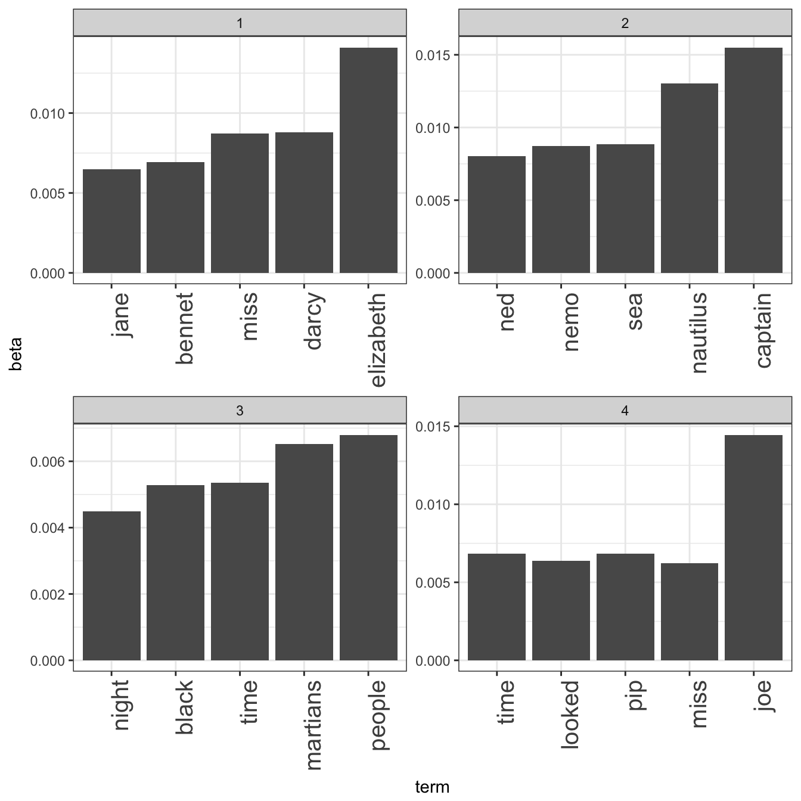
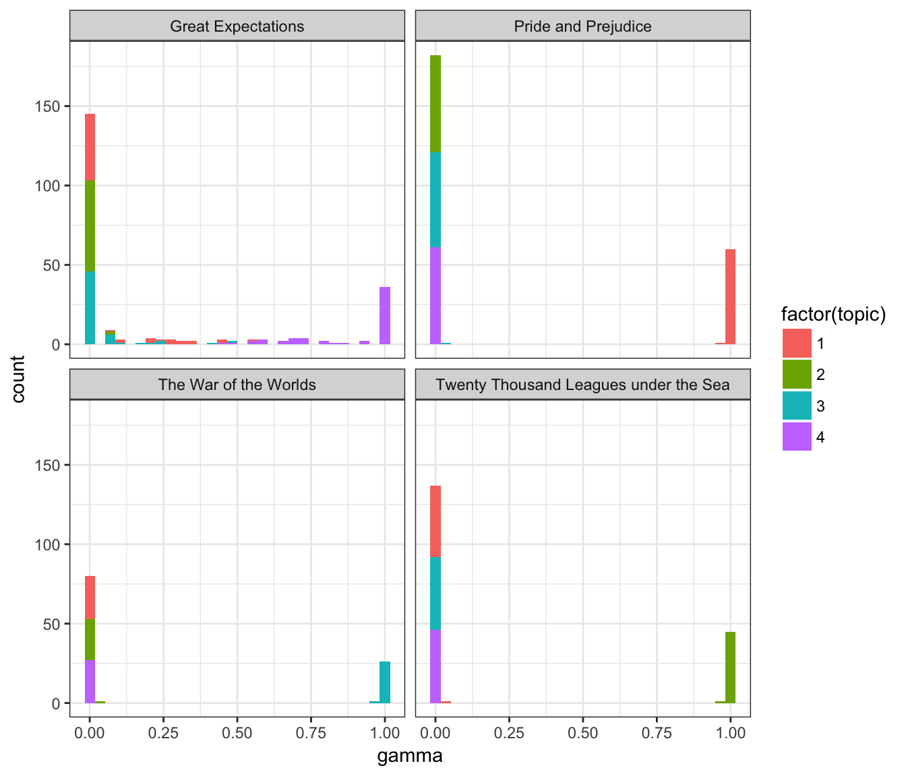

Topic modeling is a method for unsupervised classification of documents, by modeling each document as a mixture of topics and each topic as a mixture of words. Latent Dirichlet allocation is a particularly popular method for fitting a topic model.
We can use tidy text principles, as described in the main vignette, to approach topic modeling using consistent and effective tools. In particular, we’ll be using tidying functions for LDA objects from the topicmodels package.
Suppose a vandal has broken into your study and torn apart four of your books:
This vandal has torn the books into individual chapters, and left them in one large pile. How can we restore these disorganized chapters to their original books?
library(dplyr)
library(gutenbergr)titles <- c("Twenty Thousand Leagues under the Sea", "The War of the Worlds",
"Pride and Prejudice", "Great Expectations")
books <- gutenberg_works(title %in% titles) %>%
gutenberg_download(meta_fields = "title")books## # A tibble: 51,663 x 3
## gutenberg_id text title
## <int> <chr> <chr>
## 1 36 The War of the Worlds The War of the Worlds
## 2 36 The War of the Worlds
## 3 36 by H. G. Wells [1898] The War of the Worlds
## 4 36 The War of the Worlds
## 5 36 The War of the Worlds
## 6 36 But who shall dwell in these worlds if they be The War of the Worlds
## 7 36 inhabited? . . . Are we or they Lords of the The War of the Worlds
## 8 36 World? . . . And how are all things made for man?-- The War of the Worlds
## 9 36 KEPLER (quoted in The Anatomy of Melancholy) The War of the Worlds
## 10 36 The War of the Worlds
## # ... with 51,653 more rowsAs pre-processing, we divide these into chapters, use tidytext’s unnest_tokens to separate them into words, then remove stop_words. We’re treating every chapter as a separate “document”, each with a name like Great Expectations_1 or Pride and Prejudice_11.
library(tidytext)
library(stringr)
library(tidyr)
by_chapter <- books %>%
group_by(title) %>%
mutate(chapter = cumsum(str_detect(text, regex("^chapter ", ignore_case = TRUE)))) %>%
ungroup() %>%
filter(chapter > 0)
by_chapter_word <- by_chapter %>%
unite(title_chapter, title, chapter) %>%
unnest_tokens(word, text)
word_counts <- by_chapter_word %>%
anti_join(stop_words) %>%
count(title_chapter, word, sort = TRUE) %>%
ungroup()
word_counts## # A tibble: 104,721 x 3
## title_chapter word n
## <chr> <chr> <int>
## 1 Great Expectations_57 joe 88
## 2 Great Expectations_7 joe 70
## 3 Great Expectations_17 biddy 63
## 4 Great Expectations_27 joe 58
## 5 Great Expectations_38 estella 58
## 6 Great Expectations_2 joe 56
## 7 Great Expectations_23 pocket 53
## 8 Great Expectations_15 joe 50
## 9 Great Expectations_18 joe 50
## 10 The War of the Worlds_16 brother 50
## # ... with 104,711 more rowsRight now this data frame is in a tidy form, with one-term-per-document-per-row. However, the topicmodels package requires a DocumentTermMatrix (from the tm package). As described in this vignette, we can cast a one-token-per-row table into a DocumentTermMatrix with tidytext’s cast_dtm:
chapters_dtm <- word_counts %>%
cast_dtm(title_chapter, word, n)
chapters_dtm## <<DocumentTermMatrix (documents: 193, terms: 18215)>>
## Non-/sparse entries: 104721/3410774
## Sparsity : 97%
## Maximal term length: 19
## Weighting : term frequency (tf)Now we are ready to use the topicmodels package to create a four topic LDA model.
library(topicmodels)
chapters_lda <- LDA(chapters_dtm, k = 4, control = list(seed = 1234))
chapters_lda## A LDA_VEM topic model with 4 topics.(In this case we know there are four topics because there are four books; in practice we may need to try a few different values of k).
Now tidytext gives us the option of returning to a tidy analysis, using the tidy and augment verbs borrowed from the broom package. In particular, we start with the tidy verb.
chapters_lda_td <- tidy(chapters_lda)
chapters_lda_td## # A tibble: 72,860 x 3
## topic term beta
## <int> <chr> <dbl>
## 1 1 joe 5.830326e-17
## 2 2 joe 3.194447e-57
## 3 3 joe 4.162676e-24
## 4 4 joe 1.445030e-02
## 5 1 biddy 7.846976e-27
## 6 2 biddy 4.672244e-69
## 7 3 biddy 2.259711e-46
## 8 4 biddy 4.767972e-03
## 9 1 estella 3.827272e-06
## 10 2 estella 5.316964e-65
## # ... with 72,850 more rowsNotice that this has turned the model into a one-topic-per-term-per-row format. For each combination the model has \(\beta\), the probability of that term being generated from that topic.
We could use dplyr’s top_n to find the top 5 terms within each topic:
top_terms <- chapters_lda_td %>%
group_by(topic) %>%
top_n(5, beta) %>%
ungroup() %>%
arrange(topic, -beta)
top_terms## # A tibble: 20 x 3
## topic term beta
## <int> <chr> <dbl>
## 1 1 elizabeth 0.014107538
## 2 1 darcy 0.008814258
## 3 1 miss 0.008706741
## 4 1 bennet 0.006947431
## 5 1 jane 0.006497512
## 6 2 captain 0.015507696
## 7 2 nautilus 0.013050048
## 8 2 sea 0.008850073
## 9 2 nemo 0.008708397
## 10 2 ned 0.008030799
## 11 3 people 0.006797400
## 12 3 martians 0.006512569
## 13 3 time 0.005347115
## 14 3 black 0.005278302
## 15 3 night 0.004483143
## 16 4 joe 0.014450300
## 17 4 time 0.006847574
## 18 4 pip 0.006817363
## 19 4 looked 0.006365257
## 20 4 miss 0.006228387This model lends itself to a visualization:
library(ggplot2)
theme_set(theme_bw())
top_terms %>%
mutate(term = reorder(term, beta)) %>%
ggplot(aes(term, beta)) +
geom_bar(stat = "identity") +
facet_wrap(~ topic, scales = "free") +
theme(axis.text.x = element_text(size = 15, angle = 90, hjust = 1))
These topics are pretty clearly associated with the four books! There’s no question that the topic of “nemo”, “sea”, and “nautilus” belongs to Twenty Thousand Leagues Under the Sea, and that “jane”, “darcy”, and “elizabeth” belongs to Pride and Prejudice. We see “pip” and “joe” from Great Expectations and “martians”, “black”, and “night” from The War of the Worlds.
Each chapter was a “document” in this analysis. Thus, we may want to know which topics are associated with each document. Can we put the chapters back together in the correct books?
chapters_lda_gamma <- tidy(chapters_lda, matrix = "gamma")
chapters_lda_gamma## # A tibble: 772 x 3
## document topic gamma
## <chr> <int> <dbl>
## 1 Great Expectations_57 1 1.351886e-05
## 2 Great Expectations_7 1 1.470726e-05
## 3 Great Expectations_17 1 2.117127e-05
## 4 Great Expectations_27 1 1.919746e-05
## 5 Great Expectations_38 1 3.544403e-01
## 6 Great Expectations_2 1 1.723723e-05
## 7 Great Expectations_23 1 5.507241e-01
## 8 Great Expectations_15 1 1.682503e-02
## 9 Great Expectations_18 1 1.272044e-05
## 10 The War of the Worlds_16 1 1.084337e-05
## # ... with 762 more rowsSetting matrix = "gamma" returns a tidied version with one-document-per-topic-per-row. Now that we have these document classifications, we can see how well our unsupervised learning did at distinguishing the four books. First we re-separate the document name into title and chapter:
chapters_lda_gamma <- chapters_lda_gamma %>%
separate(document, c("title", "chapter"), sep = "_", convert = TRUE)
chapters_lda_gamma## # A tibble: 772 x 4
## title chapter topic gamma
## * <chr> <int> <int> <dbl>
## 1 Great Expectations 57 1 1.351886e-05
## 2 Great Expectations 7 1 1.470726e-05
## 3 Great Expectations 17 1 2.117127e-05
## 4 Great Expectations 27 1 1.919746e-05
## 5 Great Expectations 38 1 3.544403e-01
## 6 Great Expectations 2 1 1.723723e-05
## 7 Great Expectations 23 1 5.507241e-01
## 8 Great Expectations 15 1 1.682503e-02
## 9 Great Expectations 18 1 1.272044e-05
## 10 The War of the Worlds 16 1 1.084337e-05
## # ... with 762 more rowsThen we examine what fraction of chapters we got right for each:
ggplot(chapters_lda_gamma, aes(gamma, fill = factor(topic))) +
geom_histogram() +
facet_wrap(~ title, nrow = 2)
We notice that almost all of the chapters from Pride and Prejudice, War of the Worlds, and Twenty Thousand Leagues Under the Sea were uniquely identified as a single topic each.
chapter_classifications <- chapters_lda_gamma %>%
group_by(title, chapter) %>%
top_n(1, gamma) %>%
ungroup() %>%
arrange(gamma)
chapter_classifications## # A tibble: 193 x 4
## title chapter topic gamma
## <chr> <int> <int> <dbl>
## 1 Great Expectations 54 3 0.4803234
## 2 Great Expectations 22 4 0.5356506
## 3 Great Expectations 31 4 0.5464851
## 4 Great Expectations 23 1 0.5507241
## 5 Great Expectations 33 4 0.5700737
## 6 Great Expectations 47 4 0.5802089
## 7 Great Expectations 56 4 0.5984806
## 8 Great Expectations 38 4 0.6455341
## 9 Great Expectations 11 4 0.6689600
## 10 Great Expectations 44 4 0.6777974
## # ... with 183 more rowsWe can determine this by finding the consensus book for each, which we note is correct based on our earlier visualization:
book_topics <- chapter_classifications %>%
count(title, topic) %>%
top_n(1, n) %>%
ungroup() %>%
transmute(consensus = title, topic)
book_topics## # A tibble: 1 x 2
## consensus topic
## <chr> <int>
## 1 Pride and Prejudice 1Then we see which chapters were misidentified:
chapter_classifications %>%
inner_join(book_topics, by = "topic") %>%
count(title, consensus)## # A tibble: 2 x 3
## title consensus n
## <chr> <chr> <int>
## 1 Great Expectations Pride and Prejudice 1
## 2 Pride and Prejudice Pride and Prejudice 61We see that only a few chapters from Great Expectations were misclassified. Not bad for unsupervised clustering!
augment
One important step in the topic modeling expectation-maximization algorithm is assigning each word in each document to a topic. The more words in a document are assigned to that topic, generally, the more weight (gamma) will go on that document-topic classification.
We may want to take the original document-word pairs and find which words in each document were assigned to which topic. This is the job of the augment verb.
assignments <- augment(chapters_lda, data = chapters_dtm)We can combine this with the consensus book titles to find which words were incorrectly classified.
assignments <- assignments %>%
separate(document, c("title", "chapter"), sep = "_", convert = TRUE) %>%
inner_join(book_topics, by = c(".topic" = "topic"))
assignments## # A tibble: 29,376 x 6
## title chapter term count .topic consensus
## <chr> <int> <chr> <dbl> <dbl> <chr>
## 1 Pride and Prejudice 47 pocket 1 1 Pride and Prejudice
## 2 Pride and Prejudice 50 pocket 1 1 Pride and Prejudice
## 3 Pride and Prejudice 49 pocket 1 1 Pride and Prejudice
## 4 Great Expectations 38 brother 2 1 Pride and Prejudice
## 5 Pride and Prejudice 43 brother 4 1 Pride and Prejudice
## 6 Pride and Prejudice 18 brother 1 1 Pride and Prejudice
## 7 Great Expectations 22 brother 4 1 Pride and Prejudice
## 8 Pride and Prejudice 45 brother 2 1 Pride and Prejudice
## 9 Pride and Prejudice 16 brother 1 1 Pride and Prejudice
## 10 Pride and Prejudice 10 brother 2 1 Pride and Prejudice
## # ... with 29,366 more rowsWe can, for example, create a “confusion matrix” using dplyr’s count and tidyr’s spread:
## # A tibble: 3 x 2
## title `Pride and Prejudice`
## * <chr> <dbl>
## 1 Great Expectations 3876
## 2 Pride and Prejudice 37229
## 3 Twenty Thousand Leagues under the Sea 5We notice that almost all the words for Pride and Prejudice, Twenty Thousand Leagues Under the Sea, and War of the Worlds were correctly assigned, while Great Expectations had a fair amount of misassignment.
What were the most commonly mistaken words?
wrong_words <- assignments %>%
filter(title != consensus)
wrong_words## # A tibble: 3,106 x 6
## title chapter term count .topic consensus
## <chr> <int> <chr> <dbl> <dbl> <chr>
## 1 Great Expectations 38 brother 2 1 Pride and Prejudice
## 2 Great Expectations 22 brother 4 1 Pride and Prejudice
## 3 Great Expectations 23 miss 2 1 Pride and Prejudice
## 4 Great Expectations 22 miss 23 1 Pride and Prejudice
## 5 Twenty Thousand Leagues under the Sea 8 miss 1 1 Pride and Prejudice
## 6 Great Expectations 31 miss 1 1 Pride and Prejudice
## 7 Great Expectations 5 sergeant 37 1 Pride and Prejudice
## 8 Great Expectations 22 people 3 1 Pride and Prejudice
## 9 Great Expectations 31 people 2 1 Pride and Prejudice
## 10 Great Expectations 23 dear 10 1 Pride and Prejudice
## # ... with 3,096 more rows## # A tibble: 2,272 x 4
## title consensus term n
## <chr> <chr> <chr> <dbl>
## 1 Great Expectations Pride and Prejudice love 44
## 2 Great Expectations Pride and Prejudice sergeant 37
## 3 Great Expectations Pride and Prejudice lady 32
## 4 Great Expectations Pride and Prejudice miss 26
## 5 Great Expectations Pride and Prejudice father 19
## 6 Great Expectations Pride and Prejudice baby 18
## 7 Great Expectations Pride and Prejudice flopson 18
## 8 Great Expectations Pride and Prejudice family 16
## 9 Great Expectations Pride and Prejudice replied 16
## 10 Great Expectations Pride and Prejudice attention 14
## # ... with 2,262 more rowsNotice the word “flopson” here; these wrong words do not necessarily appear in the novels they were misassigned to. Indeed, we can confirm “flopson” appears only in Great Expectations:
word_counts %>%
filter(word == "flopson")## # A tibble: 3 x 3
## title_chapter word n
## <chr> <chr> <int>
## 1 Great Expectations_22 flopson 10
## 2 Great Expectations_23 flopson 7
## 3 Great Expectations_33 flopson 1The algorithm is stochastic and iterative, and it can accidentally land on a topic that spans multiple books.